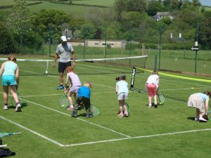

Coaching

Tim Brealey, an LTA Level 4 Senior Performance Coach with extensive experience in schools and clubs, is now offering the following programme of coaching:
Adult Beginner Group Coaching Session: once a week for 1 hour early evening and/or 1 hour during the day. Get a group together yourself or contact Tim, who will put you into a group.
Junior sessions: Saturday mornings. 2 group coaching sessions of 1 hour’s duration.
9 yrs and under: 10.00-11.00 am
Over-9s: 11.00 am to 12.00 noon.
Tim will of, course, provide individual coaching (£20 per hour), or you can split the cost by coming with a friend/s.
We hope that many of you will take up this coaching option. Please contact Tim for details at:
tel: 01626 833985 / 07972 895975
